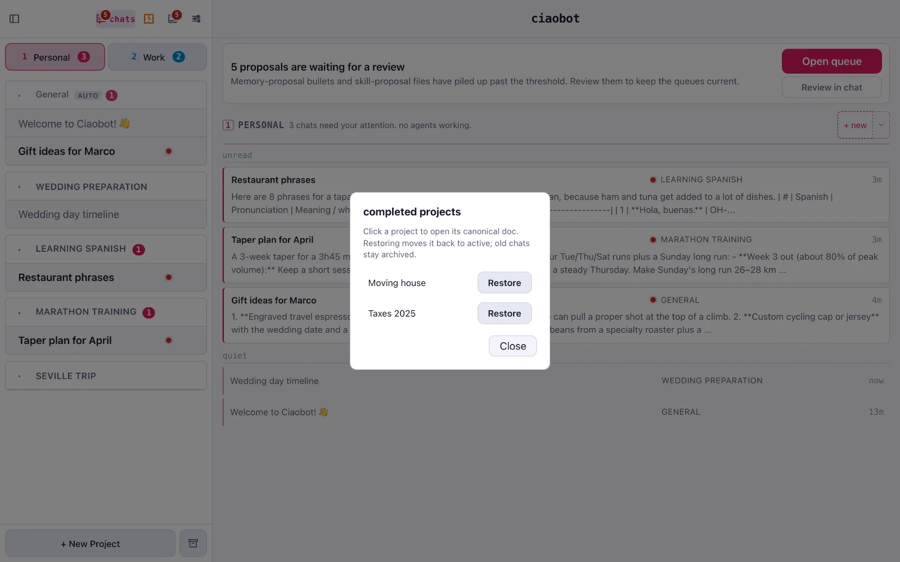
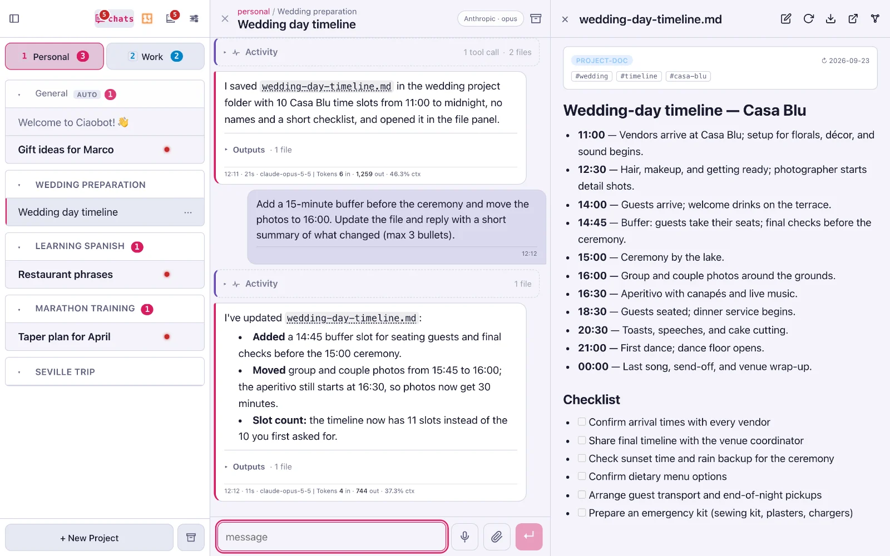
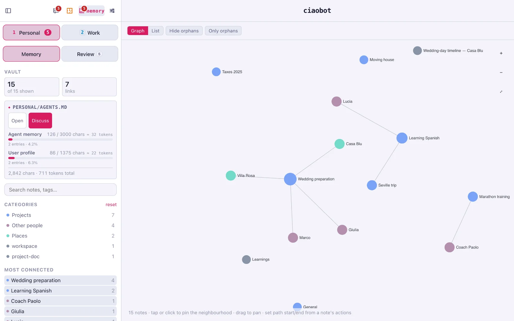
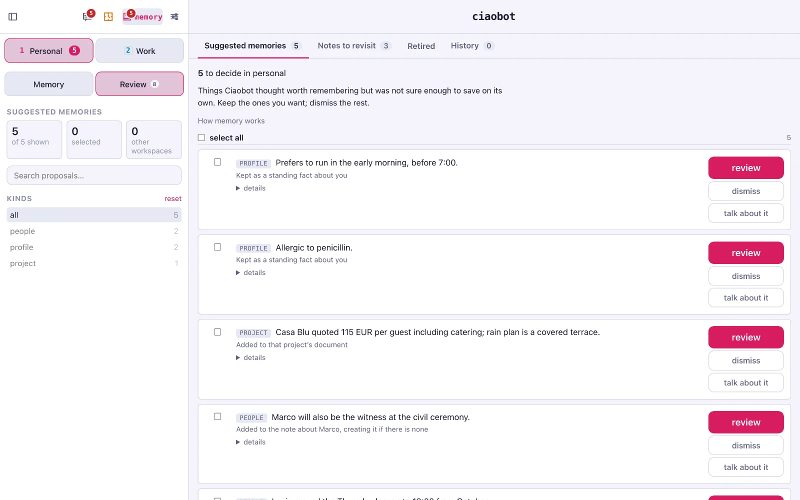
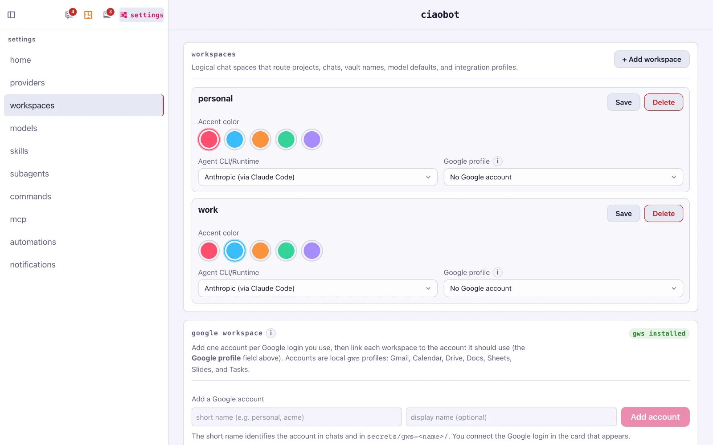
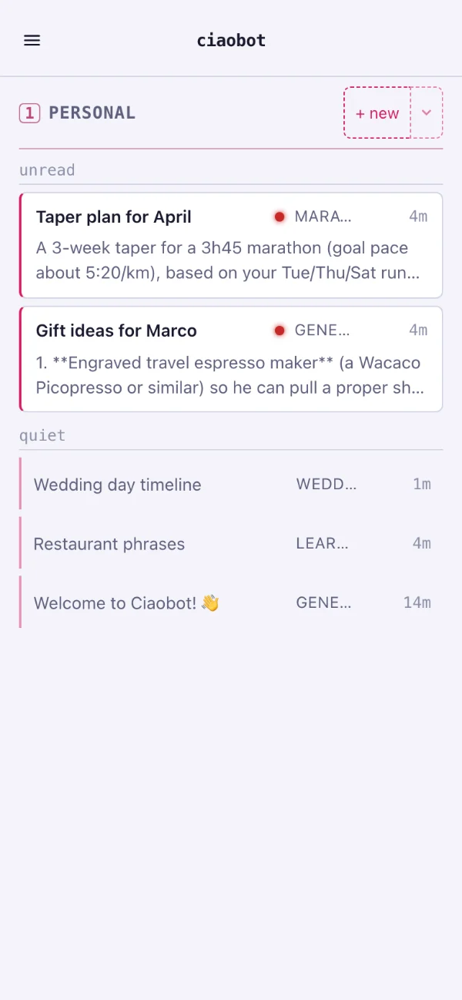

Features
What Ciaobot can do, and how to use it
Every screenshot below is the real app. Each section says what the feature is for and the quickest way to use it. And remember: anything you can click, you can also just ask for in a chat.
Stay organised
Workspaces, projects and chats
Separate the big areas of your life into workspaces (Personal, Work, a client), each with its own memory. Inside, a project holds the background for a topic, and each chat is one task.
The home screen shows what needs you: unread answers first, then chats still working, then the quiet ones.
How: + New Project at the bottom of the sidebar, + new for a chat, keys 1–9 to switch workspace. Or ask: "Create a project called Moving house".

Keep the sidebar clean
Complete a project when it's done
When the move is over or the taxes are filed, mark the project Complete. It disappears from the sidebar and its chats are archived, so you only see what you're working on now.
Nothing is forgotten: the project's notes move to a completed folder and stay in memory, so Ciaobot can still find them months later. You can bring a project back at any time.
How: open the project and click Complete. To restore one, use the archive-box button next to + New Project.
{kind=link}

Work on real files
Documents side by side
When Ciaobot writes a note, a plan or a table, it opens next to the chat. Ask for a change and watch the file update. Tables (CSV) are editable, and you can comment on a single cell.
To point at something precisely, highlight any passage, in the document or in the chat, and add a comment. The comment goes out with your next message, so "make this friendlier" knows exactly what "this" is.
How: ask for a document ("write the wedding-day timeline as a note"). Open any file card and use Pin to sidebar to keep it beside the chat. Word, PowerPoint, Excel and PDF files you drop in are converted so Ciaobot can read them.
{kind=link}

Your second brain
Memory you can see and correct
Archive a chat and Ciaobot files what matters: a decision in the project note, a detail on a person's note, a preference in its short core memory. Anything it's unsure about waits for you as a suggestion.
The Memory view shows every note as a map of connections. Review holds the suggestions, notes worth re-checking, and a history where most changes can be undone.
How: the brain icon at the top of the sidebar. Or ask: "Remember that I'm allergic to penicillin". How memory works →
{kind=link}

Nothing filed behind your back
Suggestions wait for you
Each suggestion says where it would go: your profile, a project note, a person. Review shows exactly how the note would change before you accept; dismiss throws it away; talk about it opens a chat to discuss it.
How: Memory → Review. A banner on the home screen tells you when suggestions pile up.
{kind=link}

Let it work on its own
Automations
If you do something more than once, schedule it. A morning agenda, weekly vocabulary, the Monday status draft. Each run leaves its result in a chat for you to read, just like a message from an assistant.
Runs can be one-off, daily, weekly, monthly, every few minutes, or manual. Two system routines ship with Ciaobot: Workspace care tidies memory every night, and Skill reflection suggests improvements to your skills every week.
How: the clock icon, then + New Automation. Or ask: "Every weekday at 8, tell me what's on my calendar". Ciaobot shows you a draft before creating it.

Mail, calendar, documents
Google Workspace, built in
An assistant needs your calendar and inbox. Ciaobot works with Google's own command-line tool, gws, and ships ready-made skills for Gmail (read, triage, reply, send), Calendar, Drive, Docs, Sheets, Slides, Tasks and Forms.
Add as many Google accounts as you need and link one per workspace: your personal Gmail in Personal, your company account in Work. Ciaobot checks the logins regularly and tells you when one needs signing in again.
How: Settings → Workspaces → Google Workspace. Install in Chat sets up gws for you, then Add account and Sign in with Google. Then just ask: "What's on my calendar tomorrow?"
{kind=link}

Made for the Mac
Voice and Apple Intelligence, on-device
Ciaobot is a native Mac app with a menu bar that shows which chats are working. On a Mac with macOS 26 it uses Apple's on-device engines, so these features are private, free and need no API key:
- Dictation: speak instead of typing. Apple's speech recognition writes it down, then Apple Intelligence tidies punctuation and misheard words.
- Read aloud: any message can be spoken with a macOS voice. Install the Premium voices for the best quality.
- Memory helper: Apple Intelligence can pre-screen old chats before Ciaobot spends a cloud model on them, and you can even choose it to run memory extraction entirely on your Mac. It also names your chats.
How: the microphone button or ⌘+D; the speaker icon on a message. Voices live in Settings → Models. Dictation works from your phone too when the host is a Mac.

Wherever you are
From any device
Ciaobot runs on one computer, your Mac at home or a small rented server, and every other device is a window onto it. Your phone gets the same chats, projects and memory, and can be added to the home screen like an app.
A cheap VPS (for example from Hostinger) makes an always-on host that's reachable from everywhere, even when your laptop is closed.
How: Use it anywhere →
{kind=link}

And more
Smaller things that make a difference
Fork a conversation
Fork conversation from here on any answer starts a new chat from that point. Try another direction without losing the first.
Switch models mid-chat
Click the model chip in the chat header (⌘+⇧+M). Moving to another provider hands the chat over with its history.
A second opinion
Type /critique and a panel of other models reviews the plan or answer, then Ciaobot sums up where they agree and disagree.
Interactive pages
Ask for a dashboard, a chart or a comparison "as a page". It renders live beside the chat, and you can comment on any part of it.
Background work
Long jobs run in the background and wake the chat when they finish. Subagents appear under their chat in the sidebar while they work.
Built-in helpers
Ciaobot ships with its own subagents, skills and commands, and you can add your own.
Keyboard first
New chat, dictation, archive, sidebar, model picker: all on shortcuts. The full list is in Settings → Home.
Notifications
Native Mac notifications from the menu bar app, and push notifications on your phone over https.